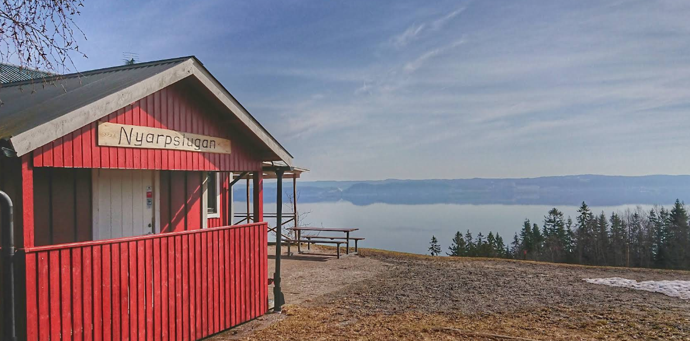

Introduction
Being a long-time enthusiast of radios and radio communication, I was genuinely excited when I first heard about Meshtastic. I immediately started reading up on the technology and went hunting for that first device to buy. Between placing the order and waiting for delivery, I was already out on a high point with my laptop, an SDR, and a self-made ground plane quarter-wave antenna. I was ready to begin this journey.
I wanted to see all the activity already happening. I wanted to start chatting with the world... but what I quickly realized was: there wasn’t a flood of messages. In fact, I might have been sitting in an 868 MHz RF pit. Then came another realization: there's a limitation on the duty cycle. And—well—I already have Discord. Why would people want to chat on Meshtastic?
Maybe this isn’t everything I dreamed it would be. So... now what?
Reframing the Purpose
ISM stands for Industrial, Scientific, and Medical. This band is globally reserved for non-commercial use—like microwave ovens, RFID, and LoRa devices. It comes with restrictions like low power and limited duty cycles to reduce interference.
After that initial burst of excitement gave way to quiet reality, I had to step back and re-evaluate what exactly I was working with here. What are the building blocks of this ecosystem I just stepped into?
First off, I’m in the ISM band. It's a band where innovation is encouraged, but with trade-offs. In Europe, for instance, the 868 MHz band has a 10% duty cycle, meaning a device can only transmit for 6 minutes per hour. That’s not a bug—it’s a feature, meant to keep the airwaves open for everyone.
So, with that in mind, I realized I hadn’t bought a magic box—I had bought a gateway to a toolbox. Yes, I ordered an integrated radio (the Heltec V3), but what really stopped me from building it from scratch using discrete components? Nothing. In fact, the Meshtastic community is full of people doing just that—designing custom boards, adapting LoRa modules like the RFM95 or SX1262, and even integrating completely bespoke radio platforms.

Then came antennas. My first was a simple ground-plane quarter-wave, but soon I found myself reading up on directional yagis, folding j-poles, and yes—loading a NanoVNA into my AliExpress wishlist (I'm sure we all have that next thing we want to buy). Why? Because Meshtastic makes RF experimentation visible. It's no longer an abstract exercise. You can build an antenna, deploy a node, and see how far a packet travels in real time. That feedback loop is gold.
Still, I wondered: what data am I even trying to send? That led me to sensor integration. Meshtastic supports temperature, humidity, GPS, and more. And when the onboard MCU isn’t enough to handle your sensors or processing needs—well, why not connect it to a Raspberry Pi and use Python to talk to the radio over serial? Suddenly, it's not just about messaging—it's about building IoT-style networks, weather stations, trackers, or even remote control systems.
At some point, I realized: maybe chatting wasn’t the point. The point was playing, building, learning, and maybe—just maybe—meeting others doing the same.
“Real” Use Cases
That lingering question—“Is there a real application for this?”—kept coming back to me. And maybe it’s worth asking: what do we even mean by real?
If we define it as “something commercial,” then sure—Meshtastic probably isn’t there yet. It’s not LoRaWAN. It’s not cellular. It’s not a drop-in solution for a logistics company or a smart city project. But real doesn’t have to mean profitable.
Here’s what real looks like in the world of Meshtastic:
- Backcountry hikers and cyclists using it to stay in touch with friends off-grid.
- Emergency response groups creating low-cost, decentralized comms networks that don't rely on cellular towers.
- Sailors and coastal explorers running nodes between boats and shorelines.
- Tech educators introducing students to RF, mesh networking, and embedded systems with a live, hands-on project.
- Tinkerers tracking solar-powered sensors miles away, all while optimizing antennas and power consumption.
These aren’t theoretical. These are happening right now. And they may not all be chatty networks filled with constant messages, but they’re undeniably real. The value isn’t in how much data flows—it’s in what you learn, enable, or connect by building the network in the first place.
Reflection
So maybe you were hoping to read this blog and walk away with the “real” application for Meshtastic.
Sorry—but I don’t think there is one.
What I’ve come to believe is that there are many real applications—and the one that matters is the one you discover for yourself. Along the way, some of those applications might evolve into polished, packaged solutions. Some might become commercial. Others might remain beautifully experimental.
Maybe one of us tinkering away in our sheds will stumble across the perfect antenna design. Or maybe, without even realizing it, we’ll spark the curiosity of a young girl or boy—who will one day become a Nobel-winning scientist. Who knows?
The hardest part of any journey, I’ve found, is learning to roll with the punches. For me, it’s not just about reaching a destination—it's about how I get there. It’s about what I see, what I feel, what I learn. It’s about the people I meet—and maybe even those I encourage along the way.
So yes—that’s what Meshtastic is for me.
And if electronics isn’t your thing? That’s okay too. Maybe you're into designing enclosures, building intuitive interfaces, creating web dashboards, or simply finding ways to connect curious minds. There’s room for all of that here.
Let the journey begin.
Written by JohanV
2025-04-18